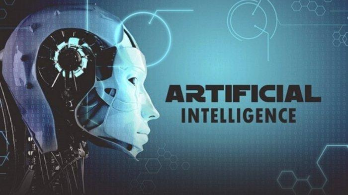
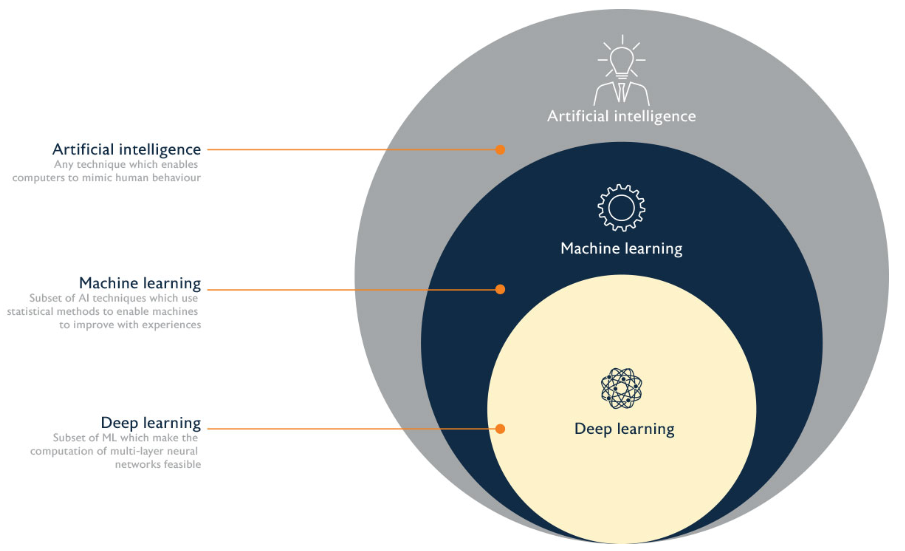

Pengertian Artificial Intelligence

Artificial Intelligence (AI) secara definisi adalah simulasi
kecerdasan buatan manusia dalam sistem komputer yang diprogram
yang mampu melakukan pembelajaran dan meniru tindakan manusia
sebagai pemecah masalah dalam kehidupan. Dan mesin akan dihubungkan dengan lintas disiplin berdasarkan matematika, ilmu komputer, linguistik, psikologi, dan banyak lagi.
Teknologi AI terus akan dikembangkan dan sangat berpengaruh terhadap kehidupan manusia terutama manfaat dari berbagai sektor industri.
Laporan IDC memperkirakan bahwa pengeluaran perusahaan untuk
teknologi AI akan meningkat menjadi $97,9 miliar pada tahun 2023.
AI dibagi menjadi 2 kategori yaitu weak dan strong. Untuk kategori yang lemah dirancang melakukan pekerjaan tertentu. Contohnya game catur dan asisten pribadi Amazon Alexa dan Apple Siri.
Sedangkan untuk kategori yang kuat yaitu sistem menjalankan tugas yang dianggap seperti manusia dan cenderung lebih kompleks, dikarenakan untuk menangani masalah tanpa campur tangan orang lain. Contohnya pada aplikasi mobil self-driving atau di ruang operasi rumah sakit.
Bagaimana AI bekerja?
AI memerlukan hardware dan software yang dikhususkan untuk menulis bahasa pemprograman dan melatih machine learning. Bahasa pemprograman yang paling populer dan identik dengan AI yaitu Python, R dan Java.
Secara umum, AI akan bekerja dengan melatih label data dalam jumlah besar, menganalisis data untuk korelasi dan pola untuk membuat prediksi dimasa depan.
Domain Artificial Intelligence

Machine Learning adalah cabang dari AI dan ilmu komputer yang berfokus pada penggunaan data dan algoritma untuk meniru cara manusia belajar, secara bertahap akan meningkatkan akurasinya. Machine learning merupakan komponen yang penting dikarenakan penggunaannya untuk metode statistik dan pada algoritma akan dilatih untuk membuat klasifikasi atau prediksi, yang akan mengungkapkan insight dalam proyek penambangan data. Sehingga, mendorong pengambilan keputusan dalam aplikasi dan bisnis, idealnya memengaruhi metrik pertumbuhan utama.
Cek pengertian tentang Machine learning disini.
"Machine learning. Model Machine learning digunakan pada medical diagnosis, image processing, prediction, classification, learning association, regression, dll.
Deep Learning adalah fungsi AI yang meniru kerja otak manusia dalam memproses data dan menciptakan pola untuk digunakan dalam pengambilan keputusan. Struktur Deep Learning terinspirasi dari struktur neuron di otak manusia.
Aplikasi Deep Learning digunakan dalam sektor industri, sebagai contoh automated driving dan perangkat keras medis, dll.
Domain AI diantaranya:
-
Natural Language Processing (NLP) adalah membantu komputer untuk mengerti dalam pemprosesan bahasa alami atau komunikasi sehari-hari yang dilakukan oleh manusia termasuk slang, sarkasme yang kemudian akan dianalisis dan dapat dipahami dalam konteksnya.
Contoh beberapa Aplikasi NLP Tingkat Tinggi diantaranya: text summarization, tata Bahasa dan koreksi kesalahan (Grammarly, Microsoft Editor), terjemahan teks, manajemen dialog, pertanyaan dan jawaban.
- Computer Vision (CV) adalah yang memungkinkan komputer dan mesin untuk memperoleh informasi yang berarti dari gambar digital, video, dan input visual lainnya dan mengambil tindakan, membuat keputusan dan rekomendasi berdasarkan informasi tersebut.
- Data Science (DS) adalah bidang interdisipliner yang menggunakan metode, proses, algoritme, dan sistem ilmiah untuk mengekstrak pengetahuan dan wawasan dari data yang bising, terstruktur, dan tidak terstruktur, serta menerapkan pengetahuan dan wawasan yang dapat ditindaklanjuti dari data di berbagai domain aplikasi”. -Wikipedia

Implementasi AI dalam kehidupan sehari-hari
AI dalam bidang kesehatan yaitu salah satu teknologi perawatan kesehatan yang paling terkenal adalah IBM Watson yang mengerti tentang natural language dan bisa merespon pertanyaan yang ditanyakan. Aplikasi AI lainnya termasuk menggunakan asisten kesehatan virtual online dan chatbots untuk membantu pasien dan pelanggan layanan kesehatan menemukan informasi medis, menjadwalkan janji temu, memahami proses penagihan, dan menyelesaikan proses administrasi lainnya. Serangkaian teknologi AI juga digunakan untuk memprediksi, melawan, dan memahami pandemi seperti COVID-19.
AI dalam bisnis yaitu algoritma Machine learning yang diintegrasikan ke dalam platform analitik dan manajemen customer relationship untuk mengetahui informasi tentang cara melayani pelanggan dengan lebih baik seperti analisis sentimen dan chatbots yang telah dimasukkan ke dalam situs web untuk memberikan layanan langsung kepada pelanggan.
AI di bidang manufaktur adalah seperti multitasking robot yang berkolaborasi dengan manusia dan bertanggung jawab atas lebih banyak bagian pekerjaan di gudang, lantai pabrik dan ruang kerja lainnya.
AI dalam transportasi adalah mengoperasikan kendaraan otonom, teknologi AI digunakan dalam transportasi untuk mengatur lalu lintas, memprediksi penundaan penerbangan, dan membuat pengiriman laut lebih aman dan efisien.
Contoh produk AI dalam kehidupan sehari-hari diantaranya:
- Virtual Reality (VR), yaitu dapat memberikan visualisasi dan berinteraksi yang lebih nyata
- Self Driving Autonomous, seperti pada Tesla. Dengan menjalankan beberapa sensor sebagai sistem radar untuk fitur autopilot
- Kamera Smartphone, seperti kamera bokeh dan filter instagram
- Chatbot dengan menggunakan NLP, agar mendapatkan jawaban sesuai dengan pertanyaannya
- Digital voice assistant, seperti pada Siri, Alexa, Google Home, dan Cortana yang menggunakan NLP agar mendapatkan jawaban bagi pengguna
- Pada E-commerce, yaitu seperti rekomendasi produk seperti pada Shopee dan Tokopedia
- Search Engine, seperti Google, Bing, dan Yahoo yang akan memberikan informasi sesuai apa yang kita cari
- Global Positioning System (GPS), dapat mendeteksi jalanan yang sedang macet atau lancar dengan simbol berwarna
- Media Social, contohnya pada Tiktok, Facebook yang dapat menemukan pertemanan berdasarkan kontak teman
- Translator yang menggunakan NLP, sehingga komputer dapat memahami bahasa manusia
Referensi